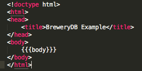
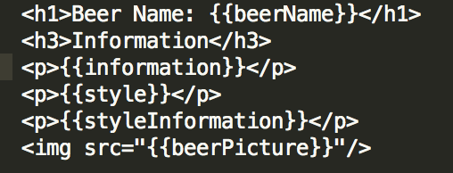
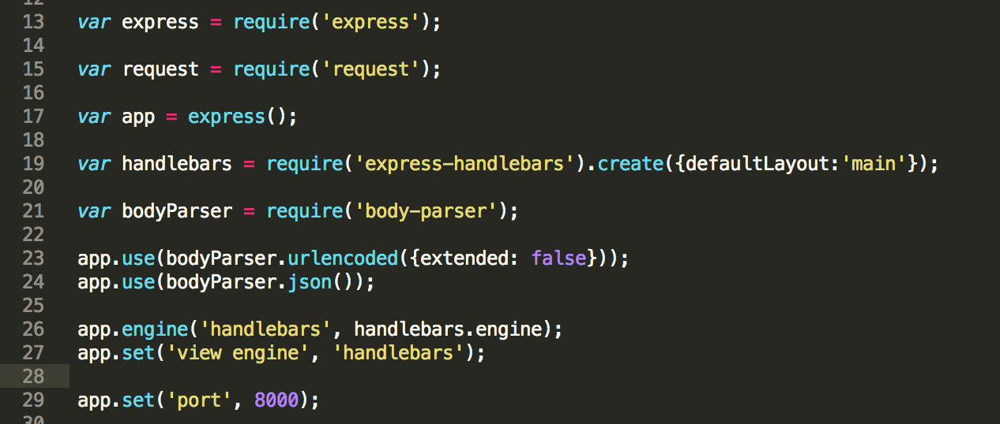

How To Put It To Use
Now that we know how to access the database, let's see what we can do with the data.
Querying the Database
So your probably asking, Ok I know how to acces the API, but what can I do with this? Great question. I'll show some simple code that will help you query the data and return information about your favorite beer, and if you see anything you see wrong, well you can submit a strong recommendation if wish via a POST request, but that's another topic for another day.
WARNING! Alot of this code may seem complex and confusing, but dont feel intimidated. I will try my best to guide you along the way and explain (very litely) on what the code means and does.
Mustache handlebars
To create a dynamic site that, at the very least, is more pleasing to the eye, you will need to install mustache handlebars. Click Here for instructions on how to install the package.
As stated in the guide, in the directory you wish to work from you'll need to create a "Views" folder and in that folder you'll need to create another folder titled "Layouts". In the layouts folder you'll want to store a generic HTML file that contains the following code:
Next you'll want to create a handlebar file that will contain dynamically display the following information we care to know about our favorite beer:
- Beer Name
- Beer Description
- Style
- Style Information
- Image of the Label
Below is an image on how the file should look. Dont worry about the curly just know you'll need to replicate this file/code and place the file in your "Views" folder.
Server.js File
Now, remember that server.js file we worked on earlier? We're going to make some small changes so we can now display the data in a nice HTML file.
First, your going to want to "parse" the data returned by the API. If you notice the output in the last page, the API is going to return an array of several fields. But the only field we care for is the "data" key and it's values inside. Below is an example of the code you'll need to enter into your already existing server.js file

Next, your going to need to app.get request. Since the returned value is an array, you'll need to come through the array to find the information you need, next assign that data to the context of the handlebar template that will display the data to you, and render the HTML page.
Last, but not least, we run our server.js file via Command Prompt or Command Line and below is the data you can expect to see when visiting http://localhost:8000/getBeers
Notice any errors on your favorite beer's information at BreweryDB? I mean how dare they get it wrong, right?!. Well you can submit a POST or PUT request to add or change data in their database. Any changes will require administrator approval.